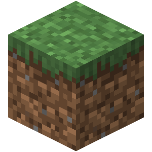
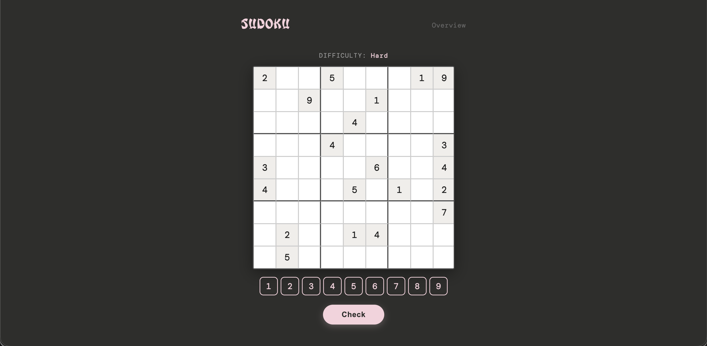
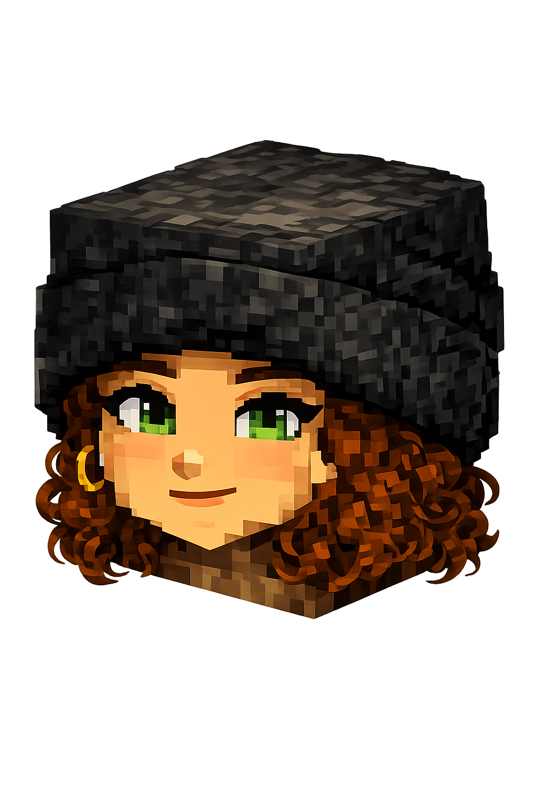

De HTML & CSS Basics.
HTML
CSS
Een belastingdienst formulier in NS huisstijl.
JavaScript
Geen JavaScript, geen ID's of classes en ik koos voor de richting Silly Walk als eerbetoon aan Monty Python. Go on then!
In dit groepsproject moesten we binnen 4 dagen een website maken voor een opdrachtgever. Dit ging over een satelliet die in 2030 wil gaan opstijgen.

In dit project moest ik gebruik maken van een Web API en Content API om iets te maken.
Een product ontwerpen en testen met echte gebruikers.
Wekelijkse talks van developers en designers.

Reflectie op de vakken, Weekly Nerds en drie leerdoelen voor de meesterproef.
Reflectie